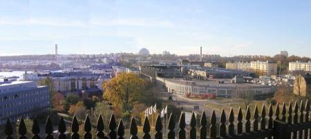
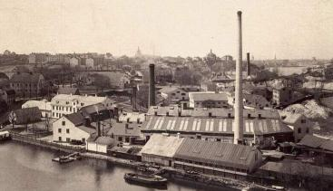
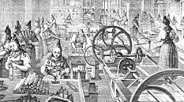
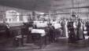
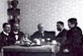
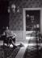
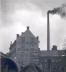
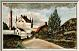
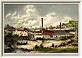
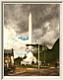

Södermalm i tid och rum. Stockholm
Dalfolket höll ljuset levande
Nere vid Danvikskanalen, mellan det grå fryshuset och det gröna Hiby-huset, ligger en gul stenbyggnad som ser ut att vara kvarglömd från äldre tider mitt i det moderna hamn- och industriområdet. Det är Hovings malmgård, en gång Lars Johan Hiertas sommarbostad.
|
 
|
Huset, som är ritat av arkitekten C C Friese, uppfördes 1770 för färgare Jacob Hoving, som hade ett färgeri här nere vid Hammarby sjö, och Hovings malmgård är byggnadens ursprungliga namn. Väl så ofta kallas den Hiertas malmgård, en benämning som berättar om en senare epok, 1840-talet, då Lars Johan Hierta använde Hovings malmgård som sommarbostad. |
|
Liljeholmens stearinfabrik, den första svenska fabriken i sitt slag, anlades av politikern och tidningsmannen
Lars Johan Hierta, som 1830 grundade Aftonbladet. Hierta hade sett stearinljustillverkning på en utställning i
London 1837 och blivit mycket intresserad av denna franska uppfinning från tidigt 1800-tal.
Tillsammans med Johan Michaelsson, adjunkt i kemi vid Teknologiska institutet i Stockholm, startade han 1839
en fabrik för tillverkning av stearinljus, Liljeholmens tekniska fabrik. Firmans första lokal var ett litet trähus på Liljeholmen, strax utanför Hornstull. 1841 flyttades verksamheten till Danvikstull, där fabriksbyggnader uppfördes och där Hierta kunde få disponera den Hovingska malmgården som sommarbostad. Firmanamnet behöll man, det hade redan hunnit bli etablerat. |
  Bilden från 1891-1898. Skorstenen byggdes 1891. Till vänster slutar Bondegatan vid Hammarby sjö. Bilden från 1891-1898. Skorstenen byggdes 1891. Till vänster slutar Bondegatan vid Hammarby sjö.
|
|
  Dalkullor i Liljeholmens Stearinfabrik. Ur Svenska Familjejournalen 1870. Dalkullor i Liljeholmens Stearinfabrik. Ur Svenska Familjejournalen 1870.
|
Stearinljustillverkning var till att börja med ett säsongarbete. Länge lönade det sig knappast att hålla verksamheten i gång under hela året. Att finna bra säsongarbetskraft i Stockholm var lyckligtvis inte svårt: här fanns dalfolk på "herrarbete", vilket innebar att man vandrade från sina hemorter under jordbrukets lågsäsong för att ta olika slags arbete i städer och större orter. Dalfolk på herrarbete utgjorde den viktigaste delen av fabrikens arbetskraft under den första tiden. |
Liljeholmens stearinfabrik blev mycket framgångsrik. Verksamheten utvidgades, fler och större fabriksbyggnader uppfördes efterhand. 1848 flyttade Hierta från Hovings malmgård till det närbelägna Barnängen, den gamla textilfabriken, som han köpt. Där började han med textiltillverkning av olika slag, bland annat skulle man väva siden. Textilfabriken blev tyvärr inte särskilt framgångsrik, stearinfabriken däremot fortsatte att blomstra och expandera, ännu långt efter Hiertas tid.
Klicka på bilderna för förstoring!
|
 Ljusstöpningslokal omkring sekelskiftet |
 Den gamla goda tiden. Kaffejunta på kontoret. James Funck (platsförsäljare), Looström (bokhållare), Dir Lindberg, Ing Harlad Funck, Fr Engström. Omkr 1900. |
 Ing Alexan- dersson i ingenjörsbo- staden i Hovings malm- gård omkr 1900 |
 Fasadreklam. 1900 |
 Liljeholmens stearinfabrik vid Danvikstull. Magnus Wester, 1900. Liljeholmens stearinfabrik 1870. Vy från öster mot Hammarby sjö och Fåfängan. |
 Liljeholmens stearinfabriks utställningsbyggnad på Leijonslätten på Djurgården vid Stockholmsutställningen 1897. Byggnaden var 37 m hög och avslutades upptill med en kopparhuv som kunde höjas och sänkas. Med hjälp av en elektrisk båglampa som lyste på kopparhuven, kunde man ge åskådarna en illusion av en brinnande ljuslåga. |
{kind=link}
{kind=link}
{kind=link}
{kind=link}
{kind=link}
{kind=link}
{kind=link}
Mycket folk arbetade här, Liljeholmens stearinfabrik kom att bli en av de största arbetsplatserna i trakten. Nya ståtliga fabrikslokaler uppfördes under senare delen av 1800-talet. Ännu vid mitten av 1900-talet tillkom nya byggnader på fabriksområdet. Särskilda arbetarbostäder byggdes i början av 1900-talet vid Danviksgatan intill fabriksområdet. Danviksgatan, med tegelhus på bägge sidor, var en fabriksgata med mycket märklig atmosfär - man kände sig förflyttad till gångna tiders industrimiljö, men snarare i England eller Tyskland än i Sverige.
Liljeholmens stearinfabrik existerar fortfarande, men verksamheten bedrivs inte längre i Stockholm utan i Oskarshamn, dit den flyttades 1971. Fabriksbyggnaderna vid Danvikstull stod tomma några år tills alla hus på fabriksområdet och vid Danviksgatan revs 1975 - 1976, med undantag för den Hovingska malmgården. Delar av området skulle användas för en breddad trafikled till Värmdö.
På fabrikens plats, kvarteret Sommaren, uppfördes ett stort hus av Hiby AB (Hantverks- och industribyggen i Stockholm). Malmgården stod länge obebodd och blev alltmer förfallen och vandaliserad. 1979 tog man äntligen itu med upprustningen, och huset har sedan dess alltid haft hyresgäster. Därigenom har en fin gammal byggnad räddats som bär på minnen både från textiltillverkningens glansdagar på 1700-talet och från den långa tid då Liljeholmens stearinfabrik dominerade trakten kring Danvikstull.
Monica Eriksson